IV. RELATIONEN UND FUNKTIONEN
A. Funktionen in der Mengenlehre
B. Termdefinierte Funktionen
C. Funktionen als Bausteine
D. Lineare Funktionen
E. Proportionalität
F. Lineare Systeme grafisch lösen
 Ergänzungen und Details
Ergänzungen und DetailsEin kartesisches Koordinatensystem hat Zahlengeraden als Achsen, die sich im Nullpunkt kreuzen und normal aufeinander stehen. Das 2-achsige Koordinatensystem spannt eine Ebene auf, das 3-achsige einen Raum, wobei die Punkte den reellen 2- bzw. 3-Tupeln entsprechen.
Beispiele: P(3|1), Q(–2|2), R(2|4|3)
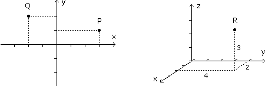
2 Was ist eine Relation?
• Eine Relation R von der Menge A zur Menge B ist eine Menge von "Beziehungspfeilen", die von A-Elementen zu B-Elementen führen.
Je nachdem, ob ein bestimmtes A-Element in Beziehung zu einem bestimmten B-Element steht oder nicht, sind sie entweder durch einen oder keinen Pfeil verbunden. Eine Relation von A zu B entspricht daher einer Teilmenge von AxB und umgekehrt:
R = { (x,y)
 AxB | x steht in Relation R zu y, kurz xRy }
AxB | x steht in Relation R zu y, kurz xRy }Genaugenommen ist das Tripel (A, B, R) die Relation und ihr Kernstück R der Graph der Relation, aber die Begriffe verschwimmen etwas.
Aufgabe 1: Stelle die Relation R von A zu A als Teilmenge von AxA aufzählend und im kartesischen Koordinatensystem dar.
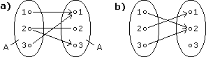 c) xRy = "x ist größer als y"
d) xRy = "x+y ist Primzahl"
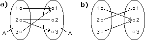 c) xRy = "x ist größer als y"
d) xRy = "x+y ist Primzahl"
a) R = { (1,1), (2,2), (2,3), (3,1) }
b) R = { (1,2), (2,1), (3,2) }
c) R = { (2,1), (3,1), (3,2) }
d) R = { (1,1), (1,2), (2,1), (2,3), (3,2) }
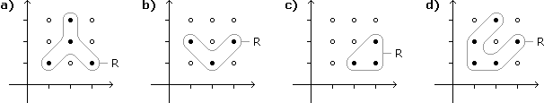
3 Was ist eine Funktion?
• Eine Funktion (Abbildung) f von der Definitionsmenge A zur Wertemenge B ordnet jedem A-Element genau ein B-Element zu.
Funktionen sind also Relationen derart, dass von jedem A-Element genau ein Pfeil wegführt. Wenn zu jedem B-Element Pfeile hinführen, heißt die Funktion surjektiv. Wenn nie mehrere Pfeile zum selben B-Element hinführen, injektiv. Wenn beides zutrifft, also zu jedem B-Element genau ein Pfeil hinführt, heißt die Funktion bijektiv.
Aufgabe 2: Klassifiziere folgende Funktionen im Hinblick auf injektiv, surjektiv, bijektiv:
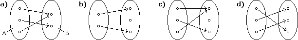
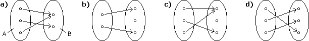
a) surjektiv b) injektiv c) weder noch d) bijektiv
Üblicherweise schreiben wir Funktionen nicht als Relationen, sondern
f: A
 B statt (A, B, f)
B statt (A, B, f)und
f(a) = b statt (a,b)
fund sprechen vom
| Funktionswert b |

|
an der Stelle a zum Argument a |
Beispiel: Eine Funktion ist etwa der Fieberverlauf während eines Tages. Zu jedem Zeitpunkt hat der Körper genau eine Temperatur, nachdem er zu keinem Zeitpunkt ohne Temperatur ist oder gleichzeitig mehr als eine Temperatur hat. Wir sprechen hier von einer "empirischen" Funktion, da die Funktionswerte durch Messung ermittelt werden und nicht über ...
Uns interessieren Funktionen, die auch historisch gesehen am Beginn standen, nämlich
f:
, x 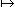 f(x) = Term in xDen Term in x können wir uns als "Rechenwerk" in einer Klarsicht-Box mit einem Ein- und Ausgang vorstellen. Die am Eingang eingespeiste Zahl nimmt überall im Term den Platz von x ein und das Ergebnis der Rechnung kommt dann beim Ausgang heraus:
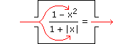
So gesehen ist die Funktion die schwarz übermalte Box, die dadurch auf ihr Ein-Ausgabe-Verhalten reduziert wird (ohne dass es darauf ankommt, was im Inneren der Box abläuft):
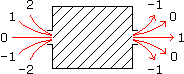
Wenn wir aus dem Term f(x) die Formel y = f(x) machen, sprechen wir von der Funktionsgleichung. So wie beim Term nicht dieser selbst, sondern sein Ein-Ausgabe-Verhalten "die Funktion" ist, ist es bei der Gleichung nicht diese selbst, sondern ihre Lösungsmenge.
Aufgabe 3: Stelle den Graphen der folgenden Funktion im kartesischen Koordinatensystem dar.
f: , y = 1 – |x|
, y = 1 – |x|
f:
, y = 1 – |x|Wir bilden eine "Wertetabelle" mit ausgewählten x-Zahlen in der linken Spalte und den dazu errechneten y-Zahlen in der rechten Spalte. Jede Zeile repräsentiert dann einen Punkt des Graphen in der xy-Ebene. Sobald der Kurvenverlauf offensichtlich wird, verbinden wir die Punkte:
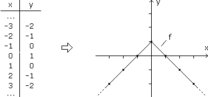
Zusatzaufgabe: Lies die Funktionswerte an den Stellen a) –1,5, b) 0,5, c) 4 aus obiger Zeichnung ab.
a) f(–1,5) = –0,5 b) f(0,5) = 0,5 c) f(4) = –3
2 Reelle Funktionen in zwei Variablen
f:
x , z = f(x,y)Der Graph im xyz-Raum, der dadurch ensteht, dass wir an jeder xy-Stelle den Funktionswert in z-Richtung auftragen, heißt Funktionsgebirge. Um ihn auf Papier zu veranschaulichen, können wir ein 3D-Gitternetz perspektivisch darstellen:
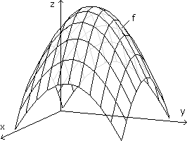
• f, g Funktionen
 f+g ist die Funktion, die an jeder Stelle die dortigen Werte von f und g addiert (analog für die anderen Operatoren).
f+g ist die Funktion, die an jeder Stelle die dortigen Werte von f und g addiert (analog für die anderen Operatoren).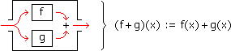
Bei termdefinierten Funktionen rechnen wir einfach die Terme entsprechend zusammen:
Aufgabe 4: Bestimme den Funktionsterm für a) f + g, a) f·g, wenn
f(x) = x – 1 und g(x) = x + 2
f(x) = x – 1 und g(x) = x + 2
a) (f+g)(x) = (x – 1) + (x + 2) = 2x + 1
b) (f·g)(x) = (x – 1)(x + 2) = x2 + x – 2
2 Hintereinanderausführung
• f, g Funktionen
fog ("f nach g") ist die Funktion, die jedes Argument zuerst über g verarbeitet und dann das, was herauskommt, über f.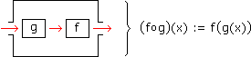
Bei termdefinierten Funktionen ersetzen wir im nachfolgenden Term das x durch offene Klammern, in die wir dann den ersten Term schreiben:
Aufgabe 5: Bestimme den Funktionsterm für a) fog, a) gof, wenn
f(x) = x2 – 2x und g(x) = x + 1
f(x) = x2 – 2x und g(x) = x + 1
a) (fog)(x) = ( )2 – 2( ) = (x + 1)2 – 2(x + 1) = x2 + 2x + 1 – 2x – 2 = x2 – 1
b) (gof)(x) = ( ) + 1 = (x2 – 2x) + 1 = (x – 1)2
Bem: Die Hintereinanderausführung ist also nicht kommutativ (aber assoziativ).
3 Funktionskurven verschieben/skalieren
• Um eine Funktionskurve in x-Richtung um d Einheiten zu verschieben, ersetzen wir überall im Funktionsterm x durch x–d (der neue Term hat dann an der Stelle x den Wert, den der alte Term bei x–d hat). Dasselbe in y-Richtung erhalten wir, indem wir zum Funktionsterm d addieren.
• Um eine Funktionskurve in x-Richtung mit dem Faktor k zu skalieren, ersetzen wir überall im Funktionsterm x durch x/k. Dasselbe in y-Richtung erhalten wir, indem wir den Funktionsterm mit k multiplizieren. Eine Spiegelung an der Achse erreichen wir mit k = –1.
Merkhilfe: In x-Richtung wird der Term eingangsseitig und gegenläufig angepasst, in y-Richtung ausgangsseitig und gleichläufig.
Aufgabe 6: Ändere die folgenden Funktionsterme, um ihre Kurven wie angegeben zu verschieben/skalieren:
a) f(x) = 5 – x2 b) f(x) = 1 + 3√8x c) f(x) =
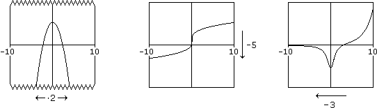
a) f(x) = 5 – x2 b) f(x) = 1 + 3√8x c) f(x) =
2x – 6
x2 + 1
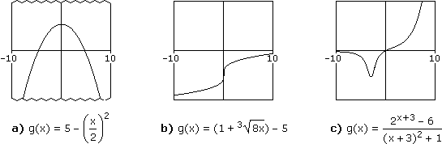
4 Umkehrfunktionen
• Die Umkehrfunktion f–1 macht wieder rückgängig, was die Originalfunktion f gemacht hat. Soll heißen, wenn wir Original- und Umkehrfunktion hintereinander ausführen (egal in welcher Reihenfolge), dann heben sich ihre Wirkungen auf:
(f–1of)(x) = x und (fof–1)(x) = x
Die Funktion id: y = x ist das neutrale Element der Hintereinanderausführung. Ihre Funktionskurve ist die 45°-Gerade durch den Ursprung und heißt erste Mediane. So gesehen sind Umkehrfunktionen nichts anderes als die inversen Elemente der Hintereinanderausführung.
Grafisch erhalten wir die Umkehrfunktion, indem wir die Kurve der Originalfunktion an der ersten Mediane spiegeln. Rechentechnisch heißt das, dass wir in der Originalgleichung x und y tauschen und dann y freistellen, sodass x und y wieder ihre übliche Rolle als Argument und Funktionswert haben:
f: y = 2x + 5
f–1: x = 2y + 5 –5
x – 5 = 2y:2
y =
x – 5
2
Bem: Wenn die Buchstaben mit bestimmten Größen verknüpft sind, werden sie nicht getauscht!
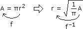
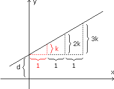
Eine lineare Funktion ist dadurch charakterisiert, dass bei gleich weit auseinanderliegenden Stellen die Differenzen aufeinanderfolgender Werte konstant sind. Für x = 0, 1, 2, ... heißt das:
• y(x) = kx + d
Ausgedehnt auf x
ergibt das eine Funktionskurve in Form einer Geraden mit d = y(0) und Steigung k. Diese wird über ein beliebig gewähltes "Steigungsdreieck" definiert, indem wir von einem Punkt der Geraden aus ein Stück in x-Richtung gehen und dann in y-Richtung, bis wir wieder auf der Geraden landen:• Steigung :=
Vertikalzuwachs Δy
Horizontalzuwachs Δx
Um "auf die Schnelle" eine Gerade zu zeichnen oder umgekehrt aus der Zeichnung die Funktionsgleichung abzulesen, starten wir mit d = y(0), also dem Geradenpunkt auf der y-Achse, und gehen von dort Δx = 1 nach rechts und dann Δy = k nach oben/unten.
Aufgabe 8: Lies die Funktionsgleichungen aus den folgenden Diagrammen ab:
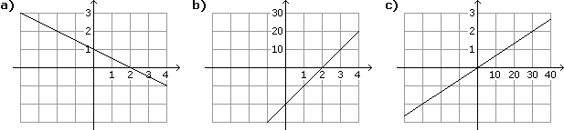
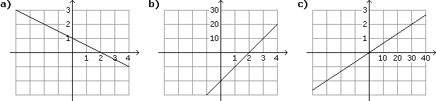
a) y = –0,5x + 1 b) y = 10x – 20 c) y = 0,06x
2 Gerade durch zwei Punkte
Die allgemeine Gleichung eines bestimmten Kurventyps enthält neben x und y weitere Buchstaben, Parameter genannt, über die sich Lage und Ausformung der Kurve einstellen lassen. Informationen (z.B. Kurvenpunkte) über eine konkrete Kurve dieses Typs setzen wir in die allgemeine Gleichung ein, um Zahlenwerte für die Parameter und damit die konkrete Gleichung zu erhalten:
Aufgabe 9: Bestimme die Gleichung der linearen Funktion, deren Kurve durch die Punkte P1(1|2), P2(5|4) geht.
y(x) = kx + d
(1) k·1 + d = 2
(2) k·5 + d = 4
(1)–(2): –4k = –2 k = 0,5
k = 0,5 (1): 0,5·1 + d = 2 d = 1,5y = 0,5x + 1,5
Bei Geraden können wir auch so vorgehen, dass wir zuerst die Steigung von P1 nach P2 bestimmen:
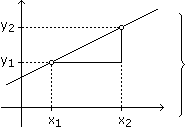 k =
y2 – y1
x2 – x1
Und dann die "Ursprungsgerade" mit dieser Steigung (y = kx) so verschieben, dass der im Ursprung gelegene Geradenpunkt in P1 landet:
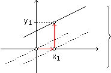 y(x) = k(x – x1) + y1
Als Lösung der obigen Aufgabe:
k =
4 – 2
5 – 1
y = 0,5(x – 1) + 2 = 0,5x + 1,53 Lineare Interpolation
Bei der linearen Interpolation (bzw. Extrapolation) sind nur ein paar Punkte einer Funktionskurve bekannt und der Kurvenverlauf dazwischen (bzw. darüber hinaus) wird geschätzt, indem benachbarte Punkte durch Geradenstücke verbunden werden.
Aufgabe 10: Bestimme den Absatz bei einem Preis von 24,30 Euro über lineare Interpolation, wenn folgende Daten vorliegen:
| x (Preis in Euro) | 22,50 | 22,90 | 23,90 | 25,10 |
| y (Absatz in Stück) | 658 | 624 | 567 | 510 |
Schritt 1: Gerade durch P1(23,90|567), P2(25,10|510) legen
y(x) = kx + d
(1) k·23,9 + d = 567
(2) k·25,1 + d = 510
(1)–(2): –1,2k = 57 k = –47,5
k = –47,5 (1): (–47,5)·23,9 + d = 567 d = 1702,25Schritt 2: Funktionswert an der Stelle 24,3 berechnen
y(24,3) = (–47,5)·24,3 + 1702,25 = 548
• Zwei Größen x und y heißen direkt proportional (y ∼ x), wenn ihr Verhältnis konstant ist oder anders ausgedrückt: Wenn wir mit x auf das n-fache gehen, geht auch y auf das n-fache. Die Funktionskurven sind Ursprungsgeraden.
y
x
y(x) = kx
Aufgabe 11: Ergänze die fehlenden Einträge, sodass x und y direkt proportional sind.
| x | 102 | 194 | 218 | |
| y | 711 | 873 |
y
x
873
194
| x | 102 | 158 | 194 | 218 |
| y | 459 | 711 | 873 | 981 |
Aufgabe 12: In 2,5 Stunden hebt eine Pumpe 3 m3 Wasser. a) Bestimme die gehobene Wassermenge in Abhängigkeit von der Laufzeit der Pumpe. b) Wie viel m3 werden in 4 Stunden gehoben?
| 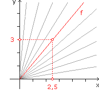 |
y(x) = Anzahl m3, die in x Stunden gehoben werden a) Überlegung: doppelt soviel Zeit doppelt soviel m3 direkte Proportionalitäty x 3 2,5 y = 1,2xb) y(4) = 1,2·4 = 4,8 m3 |
4 Indirekte Proportionalität
• Zwei Größen x und y heißen indirekt proportional (y ∼ 1/x), wenn ihr Produkt konstant ist oder anders ausgedrückt: Wenn wir mit x auf das n-fache gehen, geht y auf ein n-tel. Die Funktionskurven sind Hyperbeln, die sich asymptotisch den Achsen nähern.
xy = k y(x) =
y(x) = k
x
Aufgabe 13: Ergänze die fehlenden Einträge, sodass x und y indirekt proportional sind.
| x | 14 | 30 | 84 | |
| y | 42 | 18 |
xy = 30·42
| x | 14 | 30 | 70 | 84 |
| y | 90 | 42 | 18 | 15 |
Aufgabe 14: 2 gleiche Pumpen füllen ein Becken in 3,75 Stunden. a) Bestimme die Füllzeit in Abhängigkeit von der Anzahl eingesetzter Pumpen. b) Wie lange brauchen 5 Pumpen, um das Becken zu füllen?
| 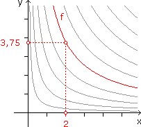 |
y(x) = Anzahl Stunden, die x Pumpen zum Füllen des Beckens brauchen a) Überlegung: doppelt soviel Pumpen halbe Zeit indirekte Proportionalitätxy = 2·3,75 :x y = 7,5 x b) y(5) = 7,5 5 |
Die Lösungsmenge einer Gleichung in x und y entspricht einer Kurve im kartesischen Koordinatensystem. Bei einem linearen 2x2-System sind das 2 Geraden. Wo sich die beiden schneiden, haben wir die Lösung des Systems, wobei 3 Fälle möglich sind: Keine Lösung (verschiedene parallele Geraden), genau eine Lösung (kreuzende Geraden), unendlich viele Lösungen (identische Geraden).
| 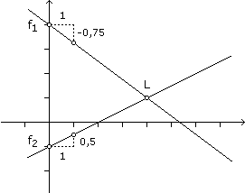 |
Aufgabe 15: Löse grafisch in
x :
(1) 3x + 4y = 16
(2) x – 2y = 2
f1: y = –0,75x + 4 f2: y = 0,5x – 1 Geraden zeichnen |
2 Lineare Ungleichungssyteme
Eine Ungleichung in x und y hat einen flächigen Lösungsbereich. Wenn wir statt dem Vergleichsoperator ein Gleichheitszeichen schreiben, erhalten wir die Randkurve. Bei einem linearen Ungleichungssystem sind das Geraden. Wo sich die von ihnen begrenzten Halbenenen überdecken, haben wir den Lösungsbereich des Systems.
| 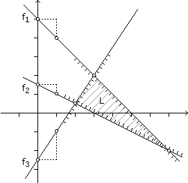 |
Aufgabe 16: Löse grafisch in
x :
(1) x + y ≤ 5
(2) x + 2y ≥ 3
(3) 3x – 2y ≥ 5
(1) y ≤ –x + 5 (Rand f1: y = –x + 5) (2) y ≥ –0,5x + 1,5 (Rand f2: y = –0,5x + 1,5) (3) y ≤ 1,5x – 2,5 (Rand f3: y = 1,5x – 2,5) Geraden zeichnen |
3 Anwendung: Lineare Optimierung
Es geht um die Stelle eines eckig berandeten xy-Bereichs, wo eine linear von x und y abhängige "Zielgröße" z ihren größten/kleinsten Wert hat. Da das Funktionsgebirge eine Ebene ist, sind die Nivaulinien parallele Geraden und wir brauchen nur zu schauen, wo diese den xy-Bereich berühren.
Aufgabe 17: Weizen und Rüben werden auf 50 ha Ackerland angebaut, wobei höchstens die Hälfte für Rüben vorgesehen ist. Insgesamt stehen 800 Arbeitsstunden zur Verfügung. Die Arbeitszeit beträgt 10 Stunden/ha bei Weizen und 25 Stunden/ha bei Rüben, der Gewinn 900,- Euro/ha bei Weizen und 1500,- Euro/ha bei Rüben. Wie viel ha müssen mit Weizen bzw. Rüben bebaut werden, damit der Gewinn maximal ist?
| 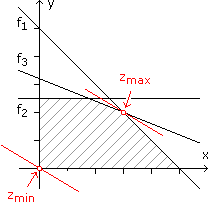 |
x, y = Anzahl ha für Weizen, Rüben (≥ 0) Gewinn z = 900x + 1500y = max! (1) x + y ≤ 50 y ≤ –x + 50 (Rand f1: y = –x + 50)(2) y ≤ 25 (Rand f2: y = 25) (3) 10x + 25y ≤ 800 y ≤ –0,4x + 32 (Rand f3: y = –0,4x + 32)Niveaulinien c = 900x + 1500y y = –0,6x + ...
|
f1
 f3: –x + 50 = –0,4x + 32 x = 30 y = –30 + 50 = 20
f3: –x + 50 = –0,4x + 32 x = 30 y = –30 + 50 = 20Bem: Bei mehr als zwei Variablen werden solche Aufgaben nicht mehr grafisch, sondern numerisch über das sogenannte Simplex-Verfahren gelöst.